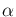
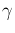

If the network has two input layers, it is supported in the GUI to show subsection individually. You need to check on plot either the first or the second input. There are two parameters  and  used for adjusting showing subsection. is for l2-regularization on the wanted input image to obtain feasible results; is for step size for the proximal gradient algorithm And start show subsection.